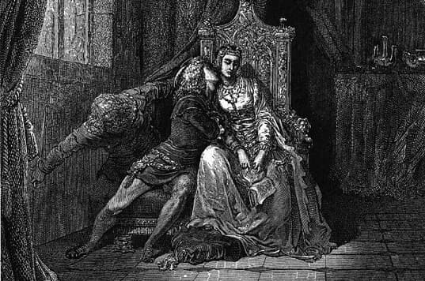
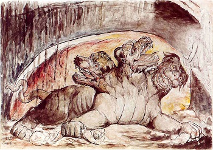
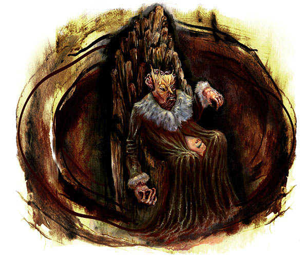
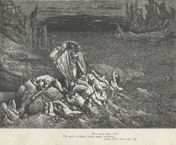
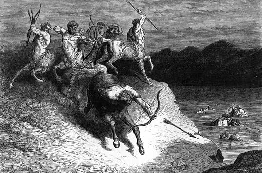
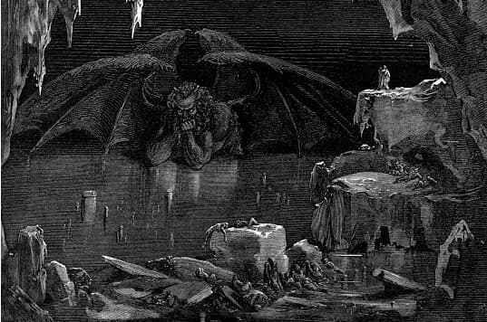

About Dante: Dante Alighieri (1265–1321) was an Italian poet, best known for his masterpiece The Divine Comedy, a three-part epic that explores Hell, Purgatory, and Heaven.
The Inferno: The first part of the trilogy, describes Dante’s journey through the 9 circles of Hell, guided by the Roman poet Virgil. Each circle punishes sinners according to the severity of their sins.
The Nine Circles of Hell
The structure of Hell is divided into 9 circles, each for a specific sin: Limbo, Lust, Gluttony, Greed, Wrath, Heresy, Violence, Fraud, and Treachery. Punishments grow harsher as one descends deeper.
1st Circle: Limbo
Who is here? Virtuous non-Christians and unbaptized souls.
Punishment: They are not tormented, but forever separated from God’s presence.
2nd Circle: Lust

Who is here? The lustful, those who were overcome by passion and desire.
Punishment: Blown endlessly back and forth by strong winds, symbolizing how they were swept away by their passions in life.
3rd Circle: Gluttony

Who is here? Gluttons, people who indulged in food, drink, and material excess.
Punishment: Forced to lie in vile slush under never-ending icy rain, while Cerberus tears at them.
4th Circle: Greed

Who is here? The greedy and the wasteful.
Punishment: They push heavy weights against one another for eternity, symbolizing their obsession with fortune.
5th Circle: Wrath

Who is here? The wrathful and the sullen.
Punishment: The wrathful fight violently on the river Styx, while the sullen are trapped beneath the water, suffocating in black mud.
6th Circle: Heresy
Who is here? Heretics who denied the soul’s immortality and rejected church teachings.
Punishment: Condemned to burning tombs for eternity.
7th Circle: Violence

Who is here? The violent, divided into three groups:
• Murderers and war-makers → Boiled in a river of blood.
• Suicides → Turned into thorny trees and attacked by Harpies.
• Blasphemers, sodomites, usurers → On burning sand under rain of fire.
Punishment: Each suffers according to the type of violence they committed.
8th Circle: Fraud
Who is here? The fraudulent, punished in 10 bolgias (ditches):
• Panderers & seducers → Whipped by demons.
• Flatterers → Immersed in excrement.
• Simoniacs → Placed head-first in holes with feet burning.
• Sorcerers/false prophets → Heads twisted backward.
• Corrupt politicians → Boiled in pitch.
• Hypocrites → Wear heavy lead cloaks.
• Thieves → Bitten by snakes, burned, and reformed endlessly.
• Fraudulent advisors → Engulfed in flames.
• Sowers of discord → Cut apart by demons repeatedly.
• Falsifiers → Afflicted with disease and corruption.
9th Circle: Treachery

Who is here? Traitors, frozen in the lake Cocytus, divided into four zones:
• Caina → Betrayers of family.
• Antenora → Betrayers of country/party.
• Ptolomea → Betrayers of guests.
• Judecca → Betrayers of benefactors and lords.
Punishment: All are trapped in ice, with Satan at the center chewing Judas, Brutus, and Cassius in his three mouths.